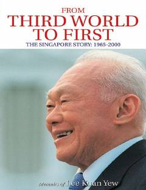

FTSingapurning qashshoqlikdan jahonning eng rivojlangan davlatlaridan biriga aylanishi haqidagi tarixiy memuar.
Ushbu kitob Singapur davlatining asoschisi Li Kuan Yu tomonidan yozilgan memuar bo'lib, unda mamlakatning qashshoq mustamlakadan rivojlangan zamonaviy davlatga aylanish jarayoni tasvirlangan. Muallif Singapurning mustaqillik yillaridagi qiyinchiliklari, siyosiy qarorlari va iqtisodiy yuksalish strategiyalari haqida batafsil hikoya qiladi.